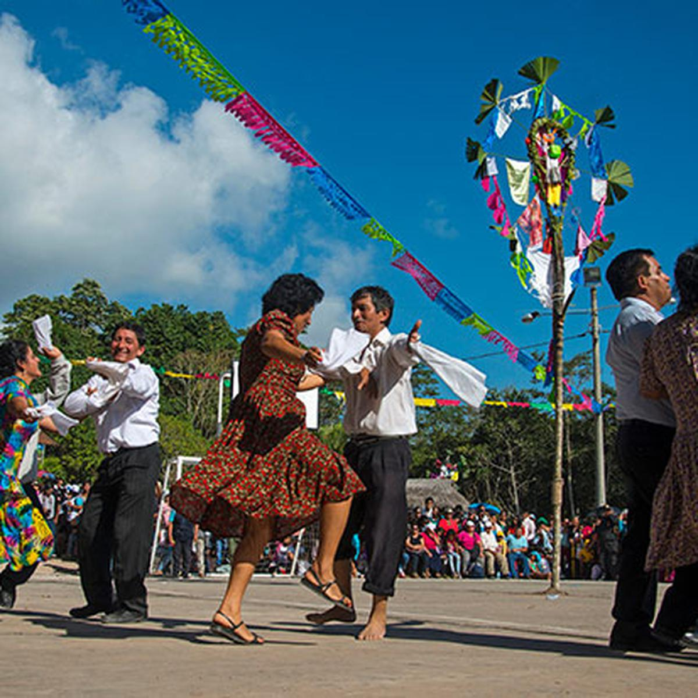
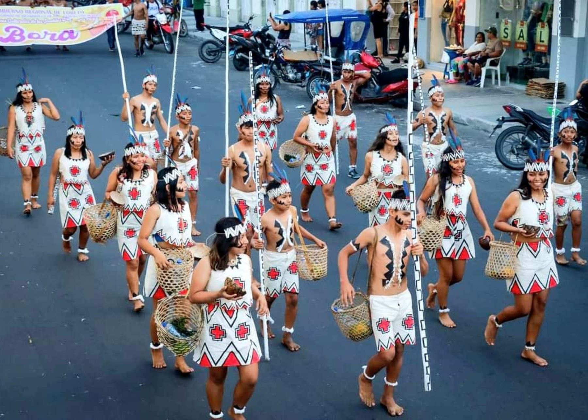
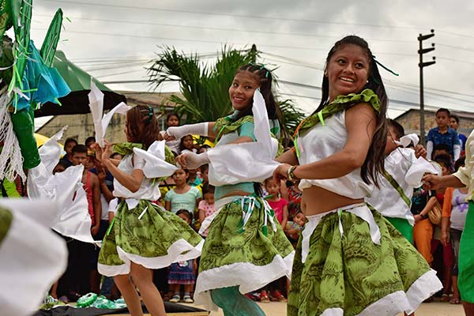

Fiesta de San Juan: Tradición Amazónica
La Fiesta de San Juan es una de las celebraciones más importantes de la Amazonía peruana. Se lleva a cabo cada 24 de junio en honor a San Juan Bautista, patrono de la región. Es una festividad llena de música, danzas, gastronomía y rituales tradicionales.
Historia
La Fiesta de San Juan tiene sus raíces en la época colonial y ha sido adoptada por las comunidades amazónicas como una celebración cultural y religiosa. Con el tiempo, ha evolucionado hasta convertirse en una de las festividades más representativas de la región, reuniendo a locales y turistas en un ambiente de alegría y devoción.



Horarios y Ubicación
- Ubicación: Iquitos, Perú.
- Fecha de celebración: 24 de junio.
- Costo de entrada: Acceso libre a la mayoría de los eventos; algunos pueden requerir pago.
Consejos para Visitantes
- Disfruta la gastronomía típica: Prueba el juane, el platillo emblemático de la festividad, acompañado de refrescantes bebidas amazónicas.
- Viste ropa adecuada: Lleva ropa ligera y cómoda para disfrutar de las festividades en el clima cálido de la selva.
- Participa en las actividades culturales: Únete a los bailes, conciertos y eventos religiosos organizados en toda la ciudad.
- Visita los ríos y balnearios: Es tradición que las familias acudan a bañarse en los ríos, siguiendo la creencia de que el agua en esta fecha tiene propiedades purificadoras.
- Respeta las costumbres locales: La Fiesta de San Juan es una celebración de gran significado cultural y religioso, así que participa con respeto y entusiasmo.